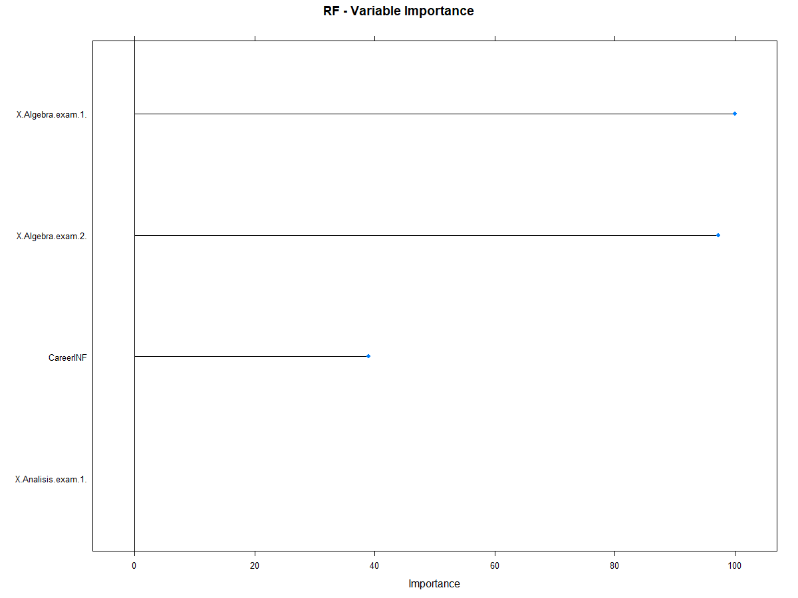

Análisis de datos para predictor académico UA
Introducción
Obtención de los datos
Para la realización de este reporte fueron proporcionados tres archivos .xlsx, los cuales contienen ingresantes de los años 2018 y 2019 de la facultad de ingeniería de la Universidad Austral. Estos datos pasaron primeramente por una etapa de “Data Curation” o “Curación de Datos”, para mejorar su calidad. A continuación se muestra una preview de como quedaron ordenados los datos con sus respectivas variables:
| Name | Gender | Career | Cohort | Entry | Math | R.Math | Physics | R.Physics | Entry Average | HS Average | School | Year |
|---|---|---|---|---|---|---|---|---|---|---|---|---|
| Nuber Morales Ramos | M | IND | 2018 | Ingreso Febrero | 10 | NA | 9 | NA | 10 | NA | Santo Tomas (La Pampa) | 2018 |
| Stefan Rodriguez Juan | M | IND | 2018 | Ingreso Febrero | 9 | NA | 9 | NA | 9 | NA | ETU Werner von Siemens | 2018 |
| Banus Antonijevic Malti | M | IND | 2018 | Ingreso Directo | 2 | NA | 9 | NA | 6 | NA | Cardenal Newman | 2018 |
| Maria Pedro Capatti | M | IND | 2018 | Ingreso Directo | NA | NA | NA | NA | NaN | NA | Nuestra Señora de Lujan | 2018 |
| Thomas Gonzalo Mucci | M | INF | 2018 | Ingreso Septiembre | 3 | 7 | 10 | NA | 7 | NA | Instituto Luigi Pirandello | 2018 |
| Franco Micaela Joaquin | M | IND | 2018 | Ingreso Libre | 4 | NA | 10 | NA | 7 | NA | Cardenal Newman | 2018 |
| Ramos Nicole Baiona | M | IND | 2018 | Ingreso Febrero | 9 | NA | 9 | NA | 9 | NA | Los Robles | 2018 |
| Argüello Berton Federico | F | IND | 2018 | Ingreso Septiembre | 7 | NA | 10 | NA | 8 | NA | Dante Alighieri | 2018 |
| Bautista Solis Aranzasti | M | IND | 2018 | Ingreso Directo | 7 | NA | 9 | NA | 8 | NA | Cardenal Newman | 2018 |
| Palmero Aneiva Scandella | M | INF | 2018 | Ingreso Febrero | 2 | 7 | 5 | NA | 5 | NA | Instituto Gabriel D’Annunzio | 2018 |
| Cruz Ruben Salinas | M | IND | 2018 | Ingreso Directo | NA | NA | NA | NA | NaN | NA | Moorlands | 2018 |
Análisis
Calidad de los datos
Como se puede ver hay 13 variables que caracterizan a cada uno de los elementos pertenecientes al conjunto de datos. Luego del proceso de “Data Curation”, hay muchas observaciones de las variables que no estan completas. Esto se debe a que, o bien fueron añadidas dichas variables al conjunto original de datos, o bien a que los datos fueron proporcionados ya de esta manera, lo cual afecta a la calidad que tiene la variable. En la siguiente tabla se muestran las variables con sus respectivas calidades (Cantidad de NA en cada variable, sobre el total de elementos que conforman el conjunto de datos):
| Porcentaje | |
|---|---|
| Name | 100 |
| Gender | 100 |
| Career | 100 |
| Cohort | 100 |
| Entry | 100 |
| Math | 83 |
| R.Math | 19 |
| Physics | 83 |
| R.Physics | 11 |
| Entry Average | 85 |
| HS Average | 24 |
| School | 100 |
| Year | 100 |
Análisis variable a variable
Una vez curados los datos, se hace un análisis “variable a variable” para extraer información de las mismas.
Género de los ingresantes
2018
En 2018, ingresaron 94 varones y 23 mujeres.
2019
En 2019, ingresaron 117 varones y 41 mujeres.
Como puede notarse en los gráficos que el porcentaje de mujeres con respecto al de varones es mayor en el año 2019 que en el 2018, debido a que incrementó la cantidad de mujeres que ingresaron a casi el doble, y el incremento de los varones no es significativo con respecto al de las mujeres.
Tipos de ingreso
El eje horizontal del gráfico representa la cantidad de ingresantes y el eje vertical contiene los distintos tipos de ingresos. Se puede ver que una gran mayoría de las personas eligen el curso de ingreso de febrero para entrar a la universidad.
Colegios de procedencia
El eje vertical del gráfico representa la cantidad de ingresantes que proporciona cada colegio y el eje horizontal contiene los nombres de los colegios. “Los Molinos”, el colegio que más aportó ingresantes es de la misma zona que la Universidad Austral.
Notas del examen de Matemática
Se analizan el promedio de todas las notas y el porcentaje de ingresantes que aprobaron el examen en primer instancia, en los años 2018 y 2019.
2018
| Promedio | Aprobados |
|---|---|
| 6 | 59 % |
2019
| Promedio | Aprobados |
|---|---|
| 6 | 57 % |
El promedio de nota de los exámenes se mantuvo igual y el porcentaje de aprobados en primer instancia tuvo una varianza despreciable. Esto puede darnos lugar a hacer una supocisión diciendo que mientras que la nota promedio de matemática sea 6, el porcentaje de aprobados rondará en un 60%.
Notas del examen de Física
Se analizan el promedio de todas las notas y el porcentaje de ingresantes que aprobaron el examen en primer instancia, en los años 2018 y 2019.
2018:
| Promedio | Aprobados |
|---|---|
| 8 | 92 % |
2019:
| Promedio | Aprobados |
|---|---|
| 7 | 74 % |
El promedio de nota de los exámenes bajó y al igual que el porcentaje de aprobados pudiendo suponer que el examen de física de 2019 tuvo una dificultad mayor, o bien, los alumnos se prepararon menos.
Se puede notar que en ambas materias el porcentaje de aprobados del año 2019 es menor que el de 2018
Promedio de ingreso
Se analizan los datos de promedio de ingreso observando el porcentaje de ingresantes que obtuvo una puntuación mayor a 7.
Ingresantes 2018: 117
Ingresantes 2019: 158
Observese que la densidad de ingresantes que obtuvieron un promedio mayor a 7 en 2019 es mayor que en 2018.
Promedio de secundaria
Análisis de los datos de promedio de secundaria y obtención un top 5.
| Name | School | HS Average |
|---|---|---|
| Onetto Leonardo Queralt | Confluencia (Neuquén) | 9.45 |
| Balerdi Gareis Eresari | San Jose | 9.41 |
| Matías Balerdi Staszewski | Northlands | 9.34 |
| Julian Ignacio Torralva | Antonio Toro | 9.20 |
| Iglesias Eugenia Martin | St. Matthew´s North | 9.17 |
Recuperatorios
Teniendo los conjuntos de los ingresantes totales de 2018 y 2019, se observa el comportamiento del porcentaje de alumnos que tuvieron que rendir algún tipo de recuperatorio.
2018
2019
Los porcentajes para ambos años son muy similares.
Interpretación
Luego de analizar los datos variable a variable, se hace una interpretación de dichos análisis cruzando datos con el fin de obtener más información de las conclusiones a las que se llega.
Media de los promedios de ingreso segun género
2018:
| Gender | Mean |
|---|---|
| Varones | 6.96 |
| Mujeres | 7.33 |
Las mujeres obtuvieron un promedio de ingreso 0.40 puntos mayor al de los varones.
2019:
| Gender | Mean |
|---|---|
| Varones | 6.41 |
| Mujeres | 6.60 |
Las mujeres obtuvieron un promedio de ingreso 0.09 puntos mayor al de los varones. La diferencia de promedios de ingreso entre varones y mujeres fue mas baja en el último año.
Comportamiento en las materias según género
Notas de matemática
2018
2019
Las mujeres tuvieron un desempeño muy similar para ambos años, en cambio, se puede notar que los hombres tuvieron una mejora en su desempeño en el año 2019 (los picos de densidad se dan en notas un poco más altas).
Notas física
2018
2019
En 2019 el desempeño general fue mas bajo, pero es notable que en ambos años las mujeres tuvieron un mejor desempeño que los varones.
De estos 4 gráficos anteriores se puede notar claramente que el desempeño en física para ambos años y sexos es considerablemente mejor que el de matemática.
Carrera elegida según género
Varones
Mujeres
Comportamiento en las materias según carrera elegida
Notas matemática
2018
2019
2018: Ingresantes de ingeniería industrial tienen mejor desempeño que lo ingresantes de ingeniería informática.
2019: Ingresantes de ingeniería industrial e informática tienen un desempeño similar, mientras que los de ingeniería biomédica, tienen un desempeño mas bajo (mayor densidad en notas bajas).
Notas física
2018
2019
2018: Ingresantes de ingeniería industrial tienen mejor desempeño que lo ingresantes de ingeniería informática.
2019: Ingresantes de ingeniería biomédica e informática tienen un desempeño similar, mientras que los de ingeniería industrial, tienen un desempeño mas alto (mayor densidad en notas altas).
Predictor
En este informe se explica el desarrollo de la generación de modelos de predicción para predecir si un alumno desertará de la carrera con datos de fin del primer cuatrimestre de cursada.
Set de datos
Para el desarrollo del predictor es necesario tener un set de datos. Estos datos pasan primeramente por un proceso de curación, como los datos anteriormente presentados. El objetivo de este proceso de curación es eliminar la mayor cantidad posible de datos nulos que tengamos en nuestro set, de esta forma el modelo predictor tendrá mejor calidad.
La generación del modelo predictor requiere que todas las variables utilizadas para predecir sean de un tipo numérico, por lo tanto, es nesesario convertir las variables a numéricas. Esto se hace dividiendo las variables en más columnas y asigandoles 0 y 1 segun corresponda. Por ejemplo, para la variable “Carrer” (carrera elegida), tenemos los valores posibles de “INF” y “IND”, informatica e industrial respectivamente. Tomamos esta variable y generamos una única columna llamada “CareerINF”, y se les asigna 1 a los que les correspondía el valor “INF”, y 0 a los que les correspondía el valor “IND”.
Luego de curar los datos y convertir las variables a numéricas, se debe divir el set en dos sub-sets, estos serán uno para entrenar el modelo, que se conoce como set de entrenamiento o “train-set” y la otra parte de los datos restantes, serán para testear el modelo, nombrado “test-set”. La división de estos sub-sets se realiza de una manera aleatoria, dejando al train-set con una porcentaje del 70% del set inicial, y al test-set con el 30% restante de los datos.
- Preview de los sets (train y test son de la misma forma pero con diferentes datos):
| GenderM | CareerINF | EntryIngreso.Directo | EntryIngreso.Febrero | EntryIngreso.Libre | EntryIngreso.Octubre | EntryIngreso.Septiembre | EntryPase.Universitario | Math | Physics | X.Entry.Average. | X.Algebra.exam.1. | X.Algebra.exam.2. | X.Analisis.exam.1. | X.IntroProg.exam.1. | Baja1 |
|---|---|---|---|---|---|---|---|---|---|---|---|---|---|---|---|
| 1 | 0 | 1 | 0 | 0 | 0 | 0 | 0 | 6.03 | 7.84 | 7.06 | 6.0 | 4 | 4.0 | 9.0 | 0 |
| 1 | 1 | 0 | 1 | 0 | 0 | 0 | 0 | 6.00 | 7.00 | 6.00 | 2.0 | 4 | 2.0 | 8.5 | 0 |
| 1 | 0 | 0 | 1 | 0 | 0 | 0 | 0 | 9.00 | 8.00 | 8.00 | 4.0 | 6 | 2.0 | 8.0 | 1 |
| 0 | 0 | 0 | 1 | 0 | 0 | 0 | 0 | 10.00 | 9.00 | 10.00 | 4.0 | 7 | 4.0 | 7.5 | 1 |
| 1 | 0 | 0 | 1 | 0 | 0 | 0 | 0 | 10.00 | 10.00 | 10.00 | 8.0 | 6 | 4.0 | 9.0 | 0 |
| 0 | 0 | 1 | 0 | 0 | 0 | 0 | 0 | 6.03 | 7.84 | 7.06 | 8.0 | 9 | 9.0 | 7.0 | 0 |
| 0 | 0 | 0 | 0 | 0 | 0 | 1 | 0 | 7.00 | 10.00 | 8.00 | 5.0 | 5 | 2.0 | 7.0 | 0 |
| 1 | 1 | 0 | 1 | 0 | 0 | 0 | 0 | 2.00 | 3.00 | 4.00 | 1.0 | 1 | 1.0 | 2.0 | 0 |
| 1 | 1 | 0 | 1 | 0 | 0 | 0 | 0 | 4.00 | 7.00 | 6.00 | 1.0 | 1 | 1.0 | 2.0 | 0 |
| 1 | 0 | 1 | 0 | 0 | 0 | 0 | 0 | 2.00 | 9.00 | 6.00 | 4.5 | 4 | 4.5 | 5.5 | 1 |
Selección de variables
La calidad de la predicción a realizar depende mucho de qué variables se utilizan para entrenar el modelo. Obviamente hay variables más importantes que otras, y es por ello que es necesario elegir las adecuadas, esto aumentará la fidelidad de la predicción. Las variables de más “confunden” al modelo y empeoran la fidelidad de la predicción.
La selección de las variables se hace mediante un método dentro del paquete CARET, este toma el set de datos a utilizar y sugiere un conjunto de variables para realizar el modelo. En esta oportunidad se seleccionaron las siguientes variables: “X.Algebra.exam.2.”, “X.Algebra.exam.1.”, “X.Analisis.exam.1.”, “CareerINF”.
Generación de modelos
Una vez definidos los sets de datos y seleccionadas las variables, es hora de generar los modelos de predicción. Cada modelo usa diferentes parámetros para entrenarse, y la calidad del modelo depende de estos parametros con los cuales se entrene, no vamos a profundizar más en este tema porque queda fuera del alcance de este este informe. Con los datos se generaron 3 modelos que detallaremos a continuación.
Para cada modelo se muestra la importancia de las variables, sus predicciones correctas y erroneas, su fidelidad, y su curva AUROC (La curva AUROC, Area Under the Receiver Operating Characteristic curve, se utiliza para medir la eficiencia o la precisión del modelo utilizando la matriz de confusión).
Modelo 1 (GBM, Gradient Boosting)
Importancia de las variables
Para este modelo, la variable más importante es el segundo exámen de Álgebra.
Tabla de confusión
| Valor predicho 0 | Valor predicho 1 | |
|---|---|---|
| Valor real 0 | 17 | 2 |
| Valor real 1 | 0 | 7 |
Del total de 26 predicciones, 24 fueron correctas y solamente 2 fueron erróneas. Prediciendo bien el 92,3% de los casos.
Curva AUROC del modelo
El valor de la curva AUROC para este modelo da de 0.889
Modelo 2 (RF, Random Forest)
Importancia de las variables

Para este modelo, la variable más importante es el primer exámen de Álgebra.
Tabla de confusión
| Valor predicho 0 | Valor predicho 1 | |
|---|---|---|
| Valor real 0 | 17 | 5 |
| Valor real 1 | 0 | 4 |
Del total de 26 predicciones, 21 fueron correctas y solamente 5 fueron erróneas. Prediciendo bien el 80,77% de los casos.
Curva AUROC del modelo
El valor de la curva AUROC para este modelo da de 0.722
Modelo 3 (NNET, Neural Net)
Importancia de las variables
Para este modelo, la variable mas importante es el primer exámen de Álgebra.
Tabla de confusión
| Valor predicho 0 | Valor predicho 1 | |
|---|---|---|
| Valor real 0 | 17 | 4 |
| Valor real 1 | 0 | 5 |
Del total de 26 predicciones, 22 fueron correctas y solamente 4 fueron erróneas. Prediciendo bien el 84,6% de los casos.
Curva AUROC del modelo
El valor de la curva AUROC para este modelo da de 0.778
Para concluir, comparando los modelos y sus respectivas curvas, el modelo que daría el mejor desempeño sería el numero 1, con un valor de AUROC de 0.889. Esto quiere decir que hay una chance del 88.9% de que el modelo será capaz de distinguir entre positivos y negativos.